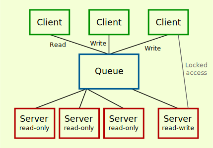

I finally changed pyzdb to support multiple servers. Actually, multiple read servers with a single write server. This post discusses the design and implementation selected. The pyzdb README now contains an example of how to use it.
This was in the original set of features I wanted for pyzdb but stopped when a single server worked well enough for my needs.
The read servers reload the database once in a while when there are changes (from the write server). For the moment
The second point means that some other way (like rsync) should be used if the databases do not have access to the same filesystem.
The clients have to decide if their requests is read-only or not and connect to the right address (URI) accordingly (there are two: the read-only address and the read-write address). Right now, client.py uses a heuristic based on the name of the function called to determine if the write server is needed.
At first, this seems like the Majordomo pattern fits this particular case exactly, with two types of workers. However, the example given is rather complicated. From that page:
This is by far the most complex example we've seen. It's almost 500 lines of code. To write this and make it somewhat robust took two days. However, this is still a short piece of code for a full service-oriented broker.
I was hoping to find something with just two types of workers and without automatic retries from the clients. (And also avoiding to decide what "disconnection from timeout" means.)
I didn't find much documentation on zmq.IDENTITY but this example also almost seem like what we want. I think its meant to be a unique identifier inside the network and the message header makes sure that messages gets to the right server, but from the example I found, it seems that I would have to make the client asynchronous (right now only the server is) using a zmq.DEALER socket rather than zmq.REQ (since I want this for clients and not "workers"/servers). And I wanted asynchronous clients to be at least optional.
One other way would be to replace the (only) router-dealer with one that forwards the messages to the right server depending on the request type (read-only or read-write), using three connections

The good thing about this one is that all clients would connect to a single URI instead of two. Since the router-dealer is a bottleneck, I'd like the queue to work quickly and this doesn't seem easy to do with pyzmq. One way would be to write a C program for it or to forgo the performance hit. I chose not to do either and with the current implementation, its still possible to put a third queue between the client and two existing queues.
In either case, I think the messages should probably be multipart then to avoid decoding JSON inside any queues.
(Probably not that interesting.)
python server.py). This is a bit ugly when using only a single server because it leaves an empty queue (that's still listening). There could be made optional with some command line parameter but it seems like there are already too many.[1] This does means that no starvation checks are in place (so the read-databases can get really out-of-sync but in that case (where there are far more requests than servers can handle), its not obvious to me what the right answer anyways. Seems like I'd want an empty request queue sometimes or even most of the time since piled up requests means all requests get higher latency.